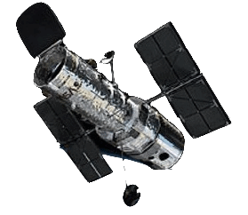

En aquesta aplicació, trobaràs la informació necessària per assabentar-te de tot el que ens envolta: des de l’exploració de l’Univers, fins a explicació detallada dels vestits dels astronautes; passant per una infinitat de interesants temes que no et pots perdre.

Amb la realització del present treball es pretén donar a conèixer amb més profunditat la meravellosa i complexa ciència de l’astronàutica, partint de la seva definició per poder posicionar-nos, he donat explicacions dels termes que l’engloben, així com dels primers coets creats amb fins militars que posteriorment van derivar amb les primeres sortides i exploracions a l’espai, fins a les llançadores i transbordadors actuals.
S’ha fet una breu incursió per la seva història per tal de confirmar que malgrat que és una ciència moderna, ja que tan sols conté uns 70 anys d’antiguitat, ha crescut exponencialment, principalment pel desenvolupament d’aparells tecnològics capaços de treballar fora de l’atmosfera terrestre.
He donat també unes breus pinzellades del que és l’Univers amb tot allò que el composa: galàxies, estrelles, sistemes solars, etc., per donar a conèixer la complexitat de llançar qualsevol aparell a l’espai, ja que hi han una sèrie de factors que influeixen directament i indirecte en la posada en marxa i desenvolupament de qualsevol projecte espacial com els contrastes de les temperatures depenent si la zona d’actuació és zona d’ombra o no; les radiacions de l’espai, les múltiples gravitacions dels objectes espacials (llunes, planetes,...), etc.
Finalment, he volgut deixar constància de la importància de les agències espacials en el desenvolupament de l’astronàutica, ja que no només existeix la NASA sinó que també hi han d’altres com la canadenca CSA que ha fet importants aportacions com el braç robòtic que conté l’Estació Espacial Internacional (ISS); l’Agència Russa de l’Espai i de l’Aviació que amb la creació de la primera estació espacial en òrbita (Mir), ha donat importants dades pel manteniment de l’actual ISS; i l’europea ESA amb el projecte Mars Express que és una missió d’exploració de Mart que implicaria la primera missió interplanetària europea; així com altres petites aportacions d’agències d’altres països.
No obstant, també és important saber que ens aportaran les noves tecnologies pel que fa els viatges a l’espai ja que amb tots els coneixements recollits en aquests 70 anys d’experiència de l’astronàutica, podríem arribar a col·lonitzar la Lluna, realitzar viatges de més llarg recorregut i fins i tot poder fer turisme, amb l’oportunitat de gaudir d’unes nits en un hotel espacial.
Com a complement final d’aquest treball s’ha realitzat una pàgina web perquè pugui ser una font d’informació per tota la gent que estigui interessada en el món de l’Astronàutica.
A continuació, apareixen alguns detalls, curiositats, noms i dades sobre les expedicions. Es tracta d’algunes pinzellades de l’enorme massa informativa, històrica i científica d’aquest programa espacial que quedarà gravat en els registres de la NASA i en l’imaginari de l’home.
APOLO 1
Roger Chaffe, Virgil Grissom i Edward White
L’espantós incendi que va provocar la mort dels astronautes durant l’enlairament va estar a punt de detindre el programa. Després d’això van continuar cinc probes sense tripulació: Apolo 2,3,4,5 i 6.
APOLO 7
Walter Cunnigham, Donn Eisele i Walter Shirra
Primera proba d’entrada en l’òrbita terrestre amb una càpsula d’Apolo tripulada. Es va experimentar la connexió amb altre càpsula en l’espai. La durada de la missió va ser de quasi 264 hores.
APOLO 8
William Anders, Frank Borman i James Lovell
La tripulació va estar en òrbita al voltant de la Lluna i va tornar a la Terra. Era la primera vegada que l’home veia directament la cara amagada de la Lluna. La durada de la missió va ser de 147 hores.
APOLO 9
J.R. McDivitt, R.L. Schweickart i D.R. Scott
El programa va ser un vol experimental en òrbita al voltant de la Terra. En ell, el mòdul lunar (LEM) i el mòdul principal es van separar i es van tornar a unir. La durada de la missió va ser de 240 hores.
APOLO 10
Eugene Cernan, John Young i Thomas Stafford
Young va estar en òrbita al voltant de la Lluna en l’astronau Charlie Brown, mentre Stafford i Cernan van arribar amb el mòdul lunar (LEM) Snoopy a 8 km de la superfície lunar. No van alunitzar: van tornar a la nau, van desenganxar el mòdul i van regressar. La durada de la missió va ser de 192 hores i 3 minuts.
APOLO 11
Edwin Aldrin, Neil Armstrong i Michael Collins
Collins va quedar-se amb el comandament del Columbia, en una òrbita de la Lluna a 110 km d’alçada, mentre que Armstrong i Aldrin van alunitzar amb el LEM Eagle en el Mare Tranquillitatis. Es van allunyar fins a 60 metres del LEM, van instal·lar un telesismòmetre i un reflector làser, van recollir 21 kg de pedres, que van portar a la Terra, i van realitzar imatges filmades i fotografies. Van enlairar-se 21 hores i 36 minuts després. Abans, van deixar una placa i una bandera nord-americana. Es van unir al Columbia, van desenganxar el LEM, que va caure sobre la Lluna, i van regressar a la Terra. La durada de la missió completa va ser de 195 hores i 17 minuts.
APOLO 12
Alan Bean, Charles Conrad i Richard Gordon
Gordon girava al voltant de la Lluna en la Yankee Glipper, mentre Bean i Conrad alunitzaven en el Oceanus Procellarum amb el Intrepid. Es van allunyar uns 400 metres del LEM, van trobar les restes de la Surveyor 3, van recollir algunes peces i 35 kg de roques de fins 70 cm de profunditat. En el EVA de 31 hores i 3 minuts van instal·lar nombrosos instruments, entre ells un sismòmetre que va registrar l’impacte del LEM al desenganxar-lo. La durada de la missió: 284 hores i 30 minuts.
APOLO 13
Fred Haise, James Lovell i John Swigert
Una explosió va fer malbé els depòsits d’oxigen, va impedir complir el programa i va posar en perill la vida de la tripulació. L’astronau Odyssey, amb el LEM Acquarius, va girar al voltant de la Lluna. Després, els astronautes van tornar a la Terra. L’aventura va durar 134 hores i 36 minuts.
APOLO 14
Edgar Mitchell, Stuart Roosa i Alan Shepard
Roosa es va quedar en òrbita i Mitchell va alunitzar amb el Kitty Hawkk en el circ de Fra Mauro, on van estar 33 hores i 31 minuts. Es van allunyar més de 2 km del LEM i van escalar quasi 120 metres del cràter Cono. A més d’un sismòmetre (van realitzar mesures amb 13 càrregues explosives), van instal·lar un reflector làser, un aparell de ràdio, un magnetòmetre (que va descobrir un camp magnètic lunar 50 vegades superior al previst), un mesurador de vent solar i un generadors de plutoni per produir energia elèctrica. Van recollir 43,5 kg de roques de fins 80 cm de profunditat. La durada de la missió va ser de 216 hores i 42 minuts.
APOLO 15
James Irwin, David Scott i Alfred Worden
Worden es va quedar en òrbita en l’Endeavour, mentre que Irwin i Scott van alunitzar amb el mòdul Falcon en la base dels Monts Apenins, en la Pallus Putredinis. Amb el totterreny Moon Rover es van allunyar més de 8 km del LEM i, en 66 hores i 55 minuts, van instal·lar molts altres instruments (sismògraf, espectròmetre, reflector làser, detector de cendres, generador elèctric,...) van realitzar diferents experiments i excursions, van recollir més de 100 kg de mostres de roques de fins 2 metres de profunditat (entre elles la “pedra del Gènesis”, de fins el moment la més antiga de les datades). Ha sigut la missió més llarga de tot el programa: 775 hores i 26 minuts.
APOLO 16
Charles Duke, Thomas Mattingly i John Young
Mattingly va romandre en òrbita al comandament de la Caspar. Duke i Young van aterrar en l’Orion en la meseta de Cayley. Una avaria tècnica va fer 25 hores més curt el programa previst. Encara d’aquest imprevist, amb el Lunar Rover es van allunyar a 6 km del mòdul, van muntar un telescopi per rajos ultravioletes, van realitzar experiments biològics i químics fent explotar 30 càrregues, van llançar un petit satèl·lit lunar que va transmetre informació durant un any i van recollir 96 kg de roques. Van estar en la Lluna 71 hores i 2 minuts, després van tornar a la Terra. La missió va durar 268 hores i 16 minuts.
APOLO 17
Eugene Cernan, Harrison Schmitt i Ronald Evans
Evans va quedar en òrbita en l’America, mentre Cernan i Harrison alunitzaven amb el Challenger en el Mare Serenitatis, no lluny del cràter Littrowk i del Mons Argaeus. Aquesta va ser l’última i més coherent de les expedicions del programa Apolo, donat que en 87 hores d’EVA els astronautes es van allunyar 6,5 km del LEM i van recollir 670 kg de materials, entre ells les estranyes “boles de cristall” vermellós (les orange soil), que es creu que es van originar com a mínim a 300 km de profunditat; van realitzar mesures gravimètriques, sismològiques, tèrmiques i elèctriques de la microatmosfera lunar, la cendra espacial i l’emissió de neutrons de les roques. A més, van prendre mostres de roques, van realitzar experiments fins i tot en òrbita, van utilitzar una sonda radar, un altímetre-laser, un radiòmetre i un espectròmetre. Al deixar caure el mòdul sobre la Lluna es va produir un seisme d’una força mai registrada abans en la Lluna, equivalent a l’energia produïda per l’explosió de 700 kg de TNT. El registre que va realitzar el sismògraf va ser enviat a la Terra. La missió va durar 301 hores.
El Galactic Suite és un disseny de vols tripulats basat en una empresa privada de Barcelona. Originalment ha establit el desenvolupament d’una estació espacial amb d’intenció d’utilitzar-la com a un hotel orbital, el Galactic Suite Design ha involucrat altres projectes espacial, fins i tot un desenvolupat per Google, el Google Lunar X Prize (aquest es basa en enviar un robot que analitzi la superfície de la Lluna a 500 metres sobre aquesta i envií imatges cap a la Terra).
Per tant, ja es podrà reservar un habitació en el primer hotel espacial a partir de 2012. El viatge tindrà un cost de tres milions d’euros, i es podrà realitzar la sortida cap a l’espai des d’una illa del Carib i donant una volta a la Terra cada 90 minuts. Aquest projecte ha sigut ideat per part del català Xavier Claramunt (que és arquitecte, enginyer aeronàutic i joier; nascut en 1965 a Igualada).
Un refugi en òrbita és l’experiència que proposa Claramunt que té el seu inici en un meravellós resort tropical, on el turista podrà descansar abans de sotmeteres a una fase d’entrenament en unes instal·lacions especials. De les illes, el turista emprendrà el seu viatge, llançat a l’espai mitjançant la nau Galactic Suite Space Ship, que el traslladarà fins l’hotel espacial i d’aquest properament tornarà a l’illa.
Va explicar Claramunt que en aquests moments un dels Mòdul Hàbitat, esta en construcció en uns tallers de Bremen (Alemània). D’això, s’ha encarregat l’empresa aeronàutica francesa Austrium i els materials utilitzats en l’interior són sofisticats i tecnològics, propis del sector espacial i aptes perquè el tripulant pugui adherir-se a ells quan no vulgui flotar. També es troba en fase d’ el·laboració tots els complements que utilitzarà el turista com els vestits, els utensilis de neteja personal, les sabates, etc. A finals de 2012, el turisme espacial serà una realitat, encara que probablement el primer enlairament sigui des de Costa Rica.
El preu d’un bitllet serà de tres milions d’euros per persona, i ja més de 50 reserves fetes. Pel que fa a inversió total del projecte, arriba a la gegant suma de 2000 milions d’euros, costejada per un soci capitalista que, com no podia ser menys, es tracta d’un xeic àrab, tremendament excitat per ser el primer en liderar el turisme espacial internacional.
El sistema de Transbordador espacial forma part del programa del transbordador espacial, el qual va ser la primera nau enviada a l’espai reutilitzable i la primera capaç de posar satèl·lits en òrbita (encara que a una òrbita baixa), i tornar-los a la superfície.
Cada transbordador té una vida útil projectada de 100 llançaments. Va ser dissenyat per ser el sistema de bandera d’exploració espacial tripulada dels Estats Units (ja que els altres països van fracassar, alhora de el·laborar un transbordador); al menys durant els anys 80, i per fer realitat el somni de construir i mantenir una estació espacial; el conjunt de transbordadors espacials, juntament amb els vehicles soviètics, ha transportat les parts de l’Estació Espacial Internacional i li porten subministres, per la qual cosa el somni s’ha fet realitat.
On podem destacar el transbordador Europeu: Hermes, el Rus: Buran i el Nord-Americà: l'Space Shuttle.
L’èxit d’una missió espacial implica que els astronautes conten amb una tècnica fiable, una sèrie de coneixements especialitzats, una bona forma física i certa estabilitat psíquica.
Entre les seqüeles fisiològiques més comunes després de les estàncies extraterrestres es troben els trastorns del son, la debilitació del sistema immunitari, algunes atròfies musculars, l’erosió de ossos i la càrrega radioactiva, que provoca que, a major temps en l’espai, més augmenti la taxa de mutació dels cromosomes de l’ésser humà i, per la qual cosa, el perill de càncer.
La ingravitació sobtada és la causa de la major part dels problemes físics en l’espai: marejos, falta de gana, nàusees i vòmits, els quals només comença a emitir-se de dos a quatre dies després. Amb tot això, a llarg termini es presenten altres problemes derivats de la falta de gravetat; el més important és la destrucció de massa muscular, que comença a produir-se tan sols a dos setmanes de l’inici del vol, ha de contrarestar-me amb un intensiu exercici físic per part dels astronautes.
Un altre problema freqüent és la inflamació de la cara en els primers dies en l’espai, degut a un excés de sang provinent dels membres superiors. Les repercussions en la rigidesa facial poden ocasionar problemes d’enteniment amb altres companys de la missió.
Pel que fa a les funcions cognitives bàsiques (percepció, memòria i pensament lògic) es mantenen estables. No obstant a això, pel que respecta a l’àrea psicomotora són perceptibles determinades pèrdues funcionals: alguns moviments voluntaris es fan amb més lentitud i es tornen imprecisos, i l’execució de tasques simultànies es fa més difícil.
Psíquicament, l’aïllament durant les missions poden provocar un estat d’astènia, sobre tot a partir de la meitat de la missió: passivitat en augment, errades d’atenció, sensació d’esgotament, irritabilitat, depressió, etc. Degut a això, en l’Estació Espacial Internacional s’aplica des de fa temps l’anomenat Human Behavior Performance Program amb l’objectiu de combatre l’avorriment i l’aïllament social. Entre els mètodes utilitzats es troben la disposició de pel·lícules, discos, pàgines personals per a relacionar-se amb la vida en la Terra, videoconferències familiars i una conferència psicològica privada cada dues setmanes amb un psicòleg de la Terra.